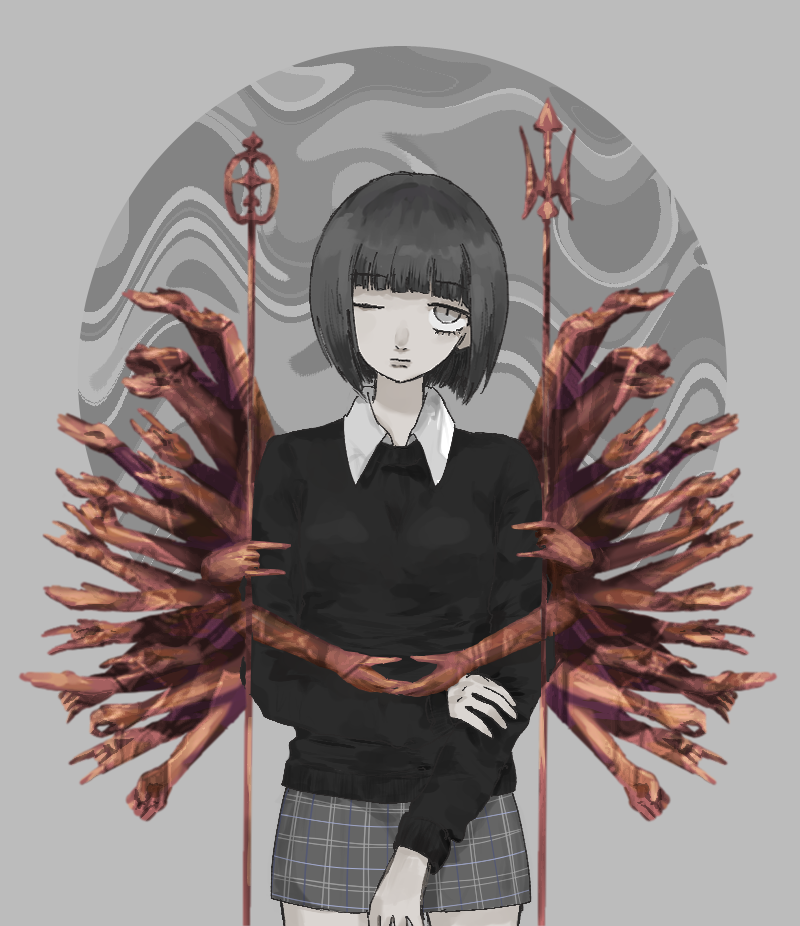
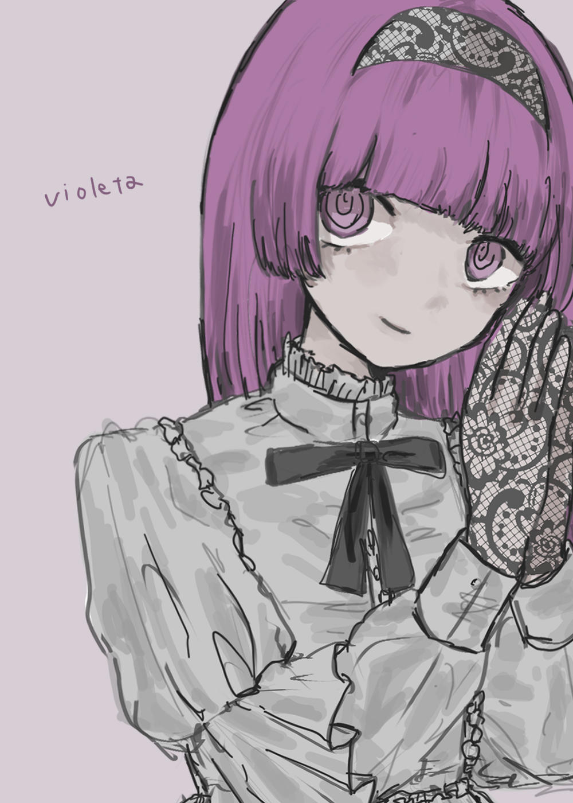
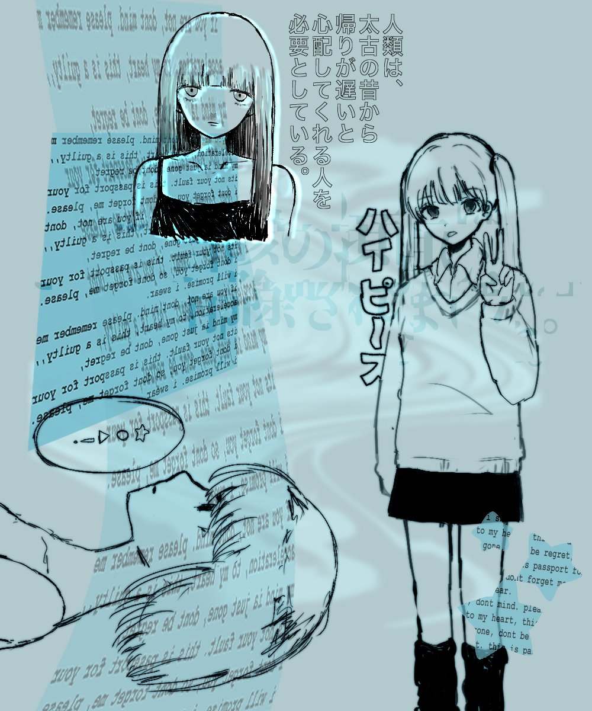
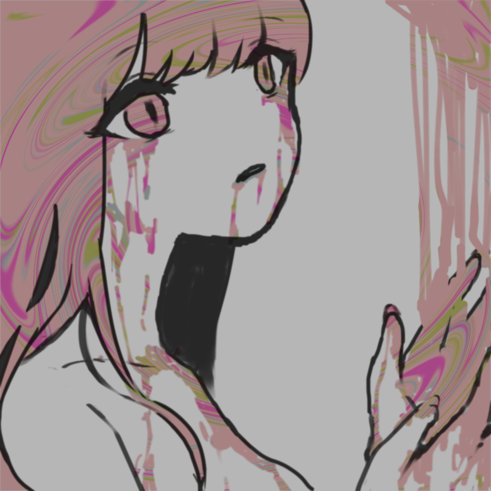
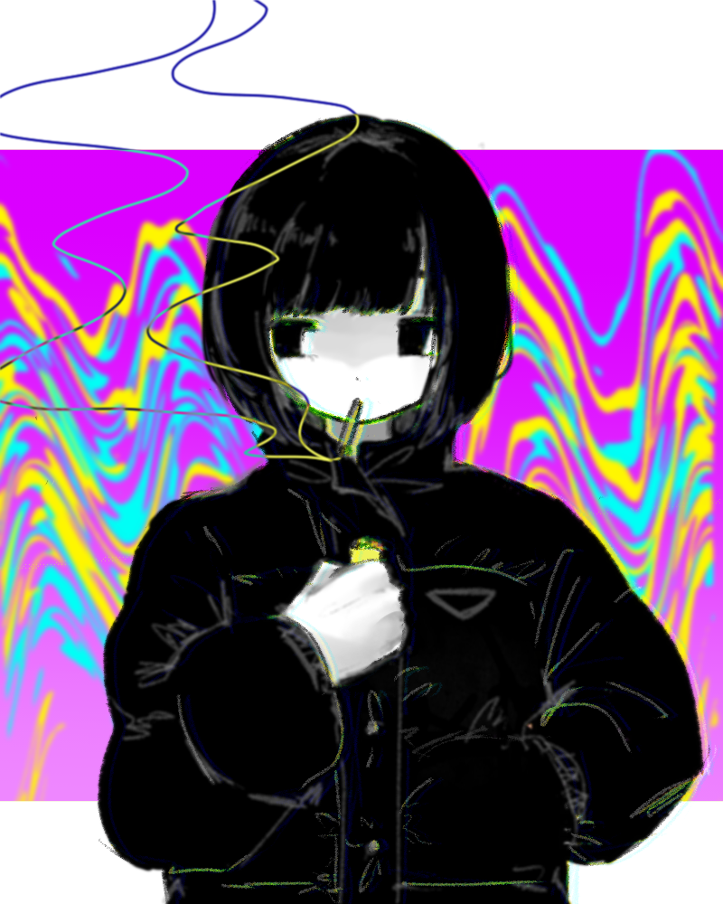
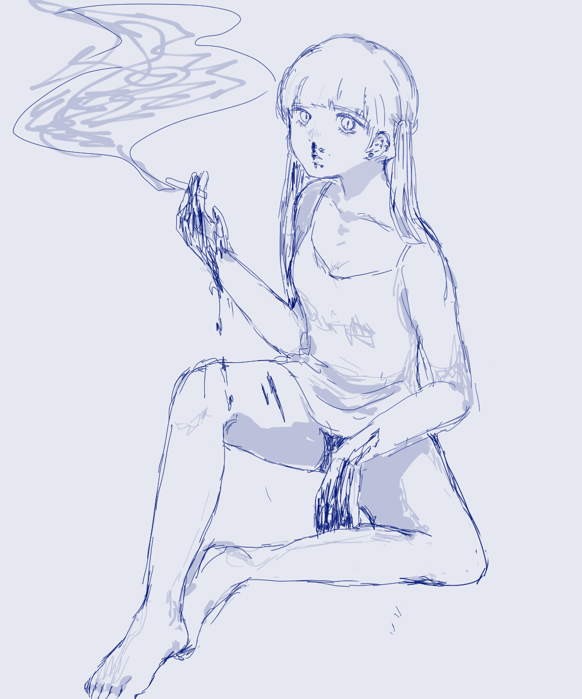

About
Here is my portfolio.
ここは私のポートフォリオです。
这是我的投资组合。
Este es mi portafolio.
Voici mon portfolio.
यहाँ मेरा पोर्टफोलियो है.
여기가 제 포트폴리오입니다.
絵を描きます。
使用ソフトはCLIP STUDIO PAINTです。
Works
クリックすると拡大表示されます。
-

千手観音の慈悲の純粋性、
腐敗しているように表現された腕の対比。
真の救いは醜悪さのなかにこそ存在する。
彼女自身の腕だけは差し伸べられず、
自己受容の必要性ないし
自己と他者の関係において
”腕”がなければ救済は為され得ない。"onclick="showPopup(this.src, this.dataset.description)"> -

-

-

-

私の好きなK-popアイドル、IZ*ONEの曲にvioletaという曲がある。
その曲のイントロが好きである。"onclick="showPopup(this.src, this.dataset.description)"> -

「人類は、太古の昔から、帰りが遅いと心配してくれる人を必要としている。」
米国の文化人類学者、マーガレット・ミードの言葉。
この言葉は、私たちが人間として生きる上で、
他者との関わりを大切にすることの重要性を教えてくれる。
この作品は、その言葉をヒントにしたわけではない。"onclick="showPopup(this.src, this.dataset.description)"> -
 -
 -
 -